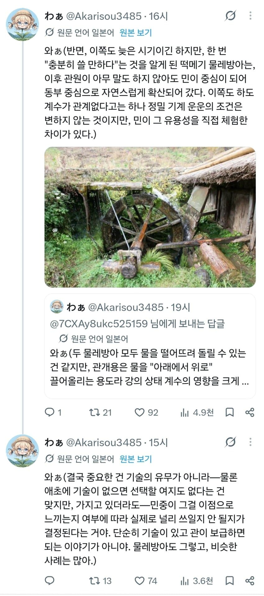
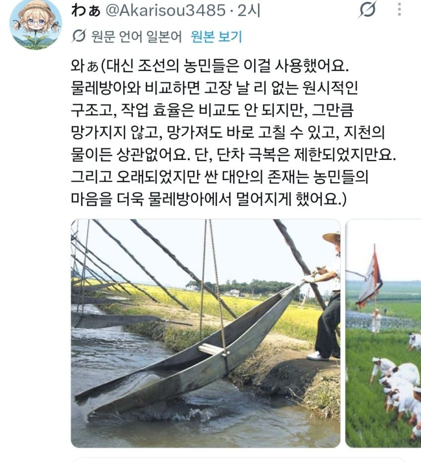
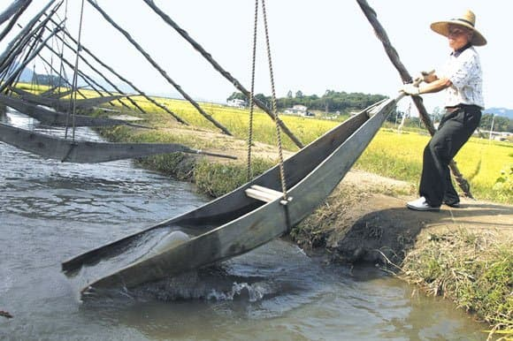
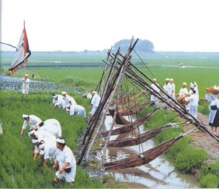
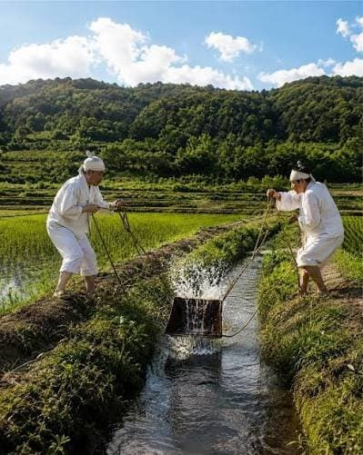
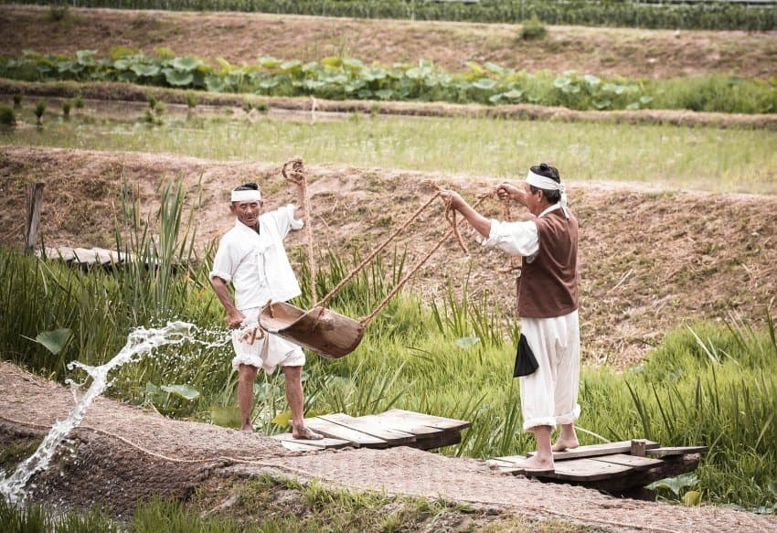
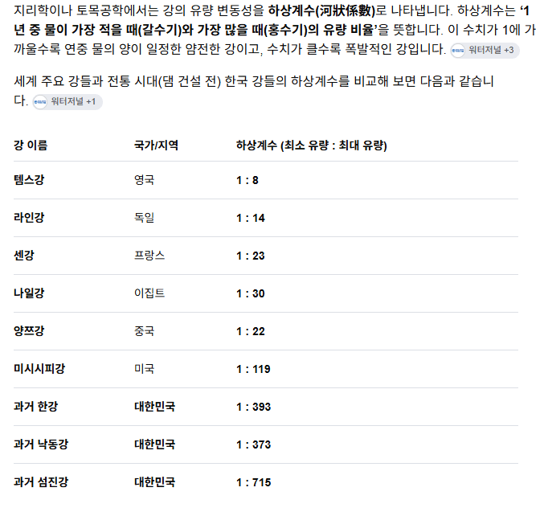

1. 한반도 지형이 개좆같다
2. 저수지를 만들어도 물레방어 돌릴 동력이 부족하다
3. 물레방아 자체 유지가 어렵다
어찌저찌 돌아가게해도 한반도 특유의 장마철만 되면 다 작살이 나는데 농민들이 한가한 사람도 아니고 장식품에 불과했다.

한반도 거주민들은 바보가 아니었다
복합적인 이유로 물레방아를 도입하지 않은거였고, 실제로 조선 동부 지역 (강원도 말하는거 같음)은 물레방아 수차를 잘 써먹었다.
결국 중요한건 기술의 유무가 아니라 기술이 쓸만한가의 문제였다





조선 농민들은 대신 이 방법을 이용해 물을 댔다
고장도 안나고 가격도 싸고 무엇보다 날씨에 상관없이 사용 가능했다.
조선시대 실학자들은 현장을 몰랐다.
미개한 농민들 어리석은 백성들 운운하며 수차를 도입해 굴려본 실학자들은 막상 현장에서 제대로 돌아가지 않는다는 문제를 발견하고 포기했다.
출처 : 수상할정도로 한국사를 잘 알고 있는 씹덕 일본인
한반도 역사 중 한강 주변에서 물난리가 더이상 안 나게 된 건 2010년대 이후의 일이라고함
그 전까지는 현대공학에 콘크리트를 들이부어도 홍수가 해마다 났음
1980년대까지 한강은 백사장에 밀물썰물이 있을 정도였고
먼 곳도 아니고 서울 한복판에서 이랬음
조선시대는 더 말할 것도 정도

이건 한국강 하상계수 비교표
그런 년들이 원주민처럼 다수로 자리잡아서 ㅋㅋ